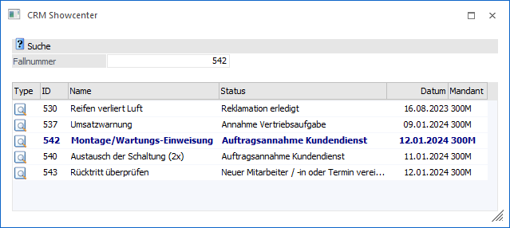

Das CRM Showcenter kann über…
1 CRM
1 CRM Showcenter
... aufgerufen werden und dient zur Übersicht aller aktuell aufgerufenen bzw. angezeigten CRM-Fällen.
Hinweis
Der Start des CRM Showcenters erfolgt automatisch, sobald 2 oder mehr CRM-Fälle parallel betrachtet werden.

Im Showcenter werden alle aktuell in der Fallansicht geöffneten Fälle angezeigt (max. 10 Fälle). Per Drag & Drop können Dateien als Upload zu den Fällen hinzugefügt werden. Die Dateien werden dann dem aktiv markierten Fall zugewiesen. Durch gleichzeitiges Drücken der "STRG"-Taste werden die Dateien mittels Drag & Drop nicht kopiert, sondern "verschoben"!
Hinweis
Beim Doppelklick auf einen Workflow oder eine Aktion in der Tabelle des Showcenters öffnet sich die Fallansicht und die entsprechende Zeile wird in der Tabelle fett markiert.
Ø Fallnummer
Soll die Fallansicht zu einem bestimmter CRM-Fall geöffnet werden, so kann an dieser Stelle die Eingabe der Fallnummer erfolgen.
Hinweis
Sollte die eingegeben Fallnummer nicht existieren, so wird eine entsprechende Meldung ausgeben.
Ø Type
An dieser Stelle wird über ein Symbol dargestellt, ob es sich bei dem CRM-Fall um eine CRM-Aktion oder einen CRM-Workflow handelt.
Ø ID
In dieser Spalte wird die Nummer des CRM-Falls dargestellt.
Ø Name
Hier wird die Kurzbezeichnung des CRM-Falls angezeigt.
Ø Status
In dieser Spalte wird die Bezeichnung des aktuellen CRM-Schritts ausgewiesen.
Ø Datum
Hier wird das Datum des zuletzt durchgeführten Schritts angezeigt.
Ø Mandant
An dieser Stelle wird die Mandantennummer dargestellt.
Tabellenbuttons

Ø Ausgabe Excel
Durch Anwahl des Buttons "Ausgabe Excel" wird der Inhalt der Tabelle an Microsoft Excel übergeben.
Ø Tabelleneinstellungen speichern
Die Spalten einer Tabelle können grundsätzlich an beliebige Positionen verschoben, bzw. in der Breite entsprechend angepasst werden. Durch Anwahl des Buttons "Tabelleneinstellungen speichern" werden die Einstellungen benutzerspezifisch gespeichert und bei dem nächsten Aufruf des Programmpunktes wieder vorgeschlagen.
Ø Gesamteinstellungen speichern
Im Gegensatz zu "Tabelleneinstellungen speichern" können mit "Gesamteinstellungen speichern" mehrere Tabellenaufbauten gespeichert und nach Wunsch geladen werden. Zusätzlich werden Sonderfunktionen der Tabelle (z.B. "Spalte gruppieren") ebenfalls bei der Speicherung bedacht.
Buttons

Ø Ok
Durch Drücken des Buttons "Ok" bzw. der Taste F5 wird die Suche der eingetragenen Fallnummer gestartet und die Fallansicht geöffnet.
Ø Ende
Mit dem Button "Ende" bzw. der Taste ESC wird das Fenster samt alle geöffneten Fallansichten geschlossen.